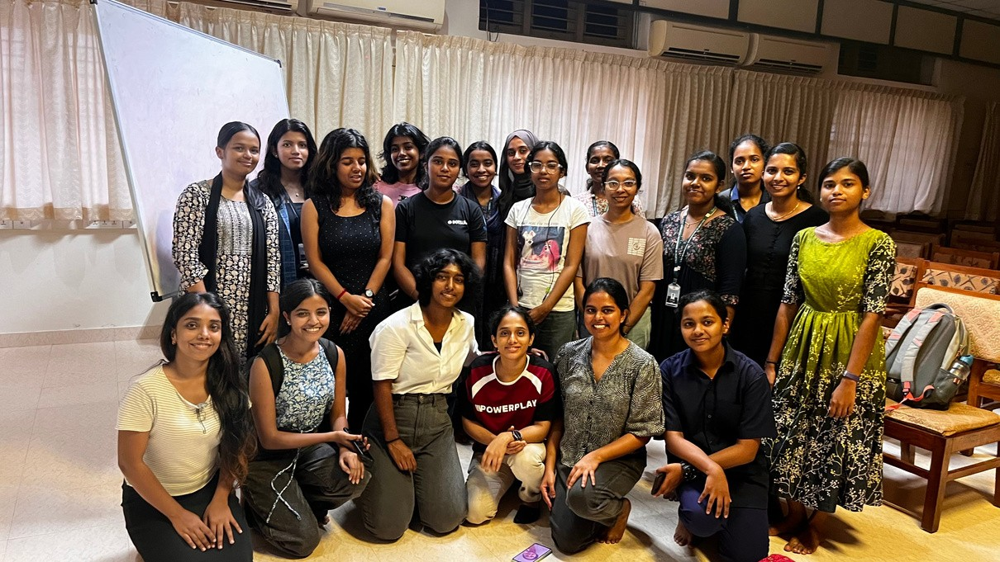
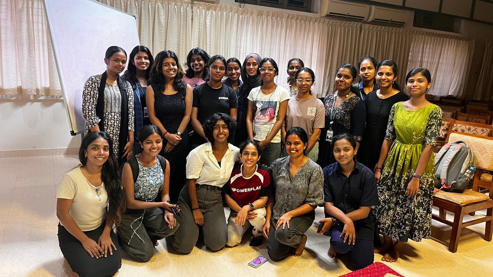

SHE Orientation
20
Participants
March 7, 2024
Date Conducted
Overview
On March 7, 2024, SHE@CET organized an orientation session to introduce students to the various programs offered under the SHE umbrella. The session aimed to provide students with a comprehensive understanding of SHE@CET's objectives, opportunities, and resources, thereby encouraging their active participation and involvement in future initiatives. The event was beneficial to all attendees and future participants who gained awareness and insight into the available opportunities.
Objectives
- Informative Session: Offer students detailed information about the diverse array of programs available under the SHE@CET initiative.
- Engagement: Engage students through interactive presentations and sessions to enhance their understanding and interest in SHE@CET activities.
- Empowerment: Empower students by providing them with the knowledge and resources necessary to actively participate in and contribute to SHE@CET initiatives.
- Networking: Facilitate networking opportunities among students and SHE@CET organizers, fostering a sense of community and collaboration.
Moments from the Orientation

